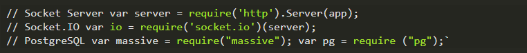
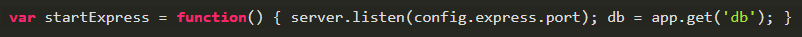
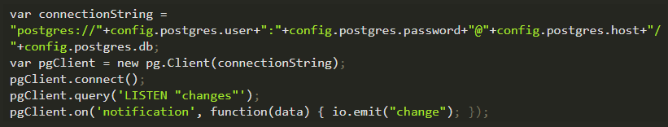
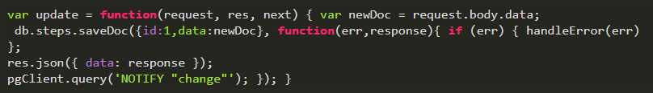
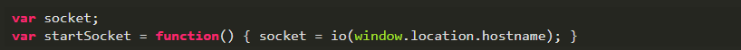

Creating a Realtime API with PostgreSQL
PostgreSQL is the database that allows us to carry out functions that normally would not be possible with SQL. One of them is to obtain notifications in real time.
Today we will return to the example of the article How to create a JSON API in PostgreSQL with NodeJS and we will add this functionality. This way, when a new element is added to the list, all connected clients will know that there was a change and update their data automatically.
To create a real-time application with PostgreSQL, what we do is send a notification to all clients every time a change is made using the NOTIFY command. When doing so, we must indicate which channel we want to use and, optionally, we can also send a data packet. In the same way, to keep our data updated in real time we have two options:
The first is just to send a notification from NodeJS to a channel every time we make changes. This tells customers that they should update the data that relates to that channel; either by adding the changes that must be applied directly in the notification, or sending it without data and that the clients download the necessary data.
The second option is to use the PostgreSQL console to create a function in our database that sends a notification and then create a trigger that calls this function when an insert-query is detected. This must be done for each table we wish to observe. This last method is difficult to execute and prone to human error. Also, it makes more sense to make this kind of changes from the controller (NodeJS) than from the model (PostgreSQL). So for this example, we'll use the first option.
In the Backend
For notifications we will use the node-postgres library to communicate NodeJS with the database; and Socket.IO to communicate with customers via Web Sockets. Let's start by adding these dependencies: server.js
In order for our Web Sockets server to work properly, we must start Express using the HTTP server. server.js
Now we must connect node-postgres with our database and execute the LISTEN command by adding the name of the channel we want to listen to. This to be able to segment the notifications of our application.
For our example we will use a channel that we will call changes. When we receive a notification from PostgreSQL, we will issue a message via Web Sockets to our clients with the change data. If we have more than one channel, we can know which channel sent the notification if we check the value of data.channel. We can pass this information to a switch case to send the correct message, or directly broadcast the name of the channel via Web Sockets. server.js
Send a notification by PostgreSQL is very easy. Simply execute:_pgClient.query ('NOTIFY_ "
server.js
In the Frontend
Now that we have the settings in the backend, it's time to make some small adjustments in the ReactJS client. The first thing we must do is create a method to establish the connection through Web Sockets and an object in which we will save this connection. reactApp.jsx
Now we must add the additional code to our ReactJS application, this should go in our highest hierarchy component and be placed in the componentDidMount event. The first thing to do is call startSocket () to start our connection. Next, we must create an event that calls downloadData () when we receive a notification. In this case change, so that each time the notification of a change is received, ReactJS will be responsible for downloading the data and making the necessary adjustments in the DOM to update the view.
reactApp.jsx
Do not forget to execute the command jsx -x jsx -w jsx / js / from your console to update the changes you made in your ReactJS application. Now we just need to download the Socket.io library in our client. This is automatically added to our server by default; so we just need to add the socket.io/socket.io.js index.html path
Ok, now we have an application that works in real time with PostgreSQL.